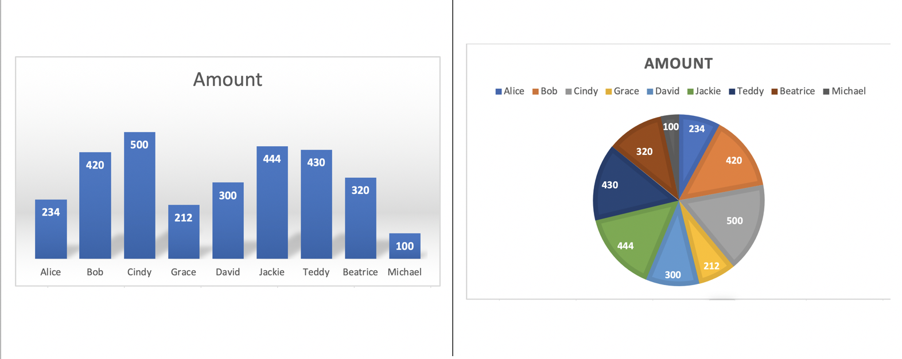

Most people grasp the truth of an assessment only when they unequivocally envision the evidence for it. Visualization can map data into visual properties. With correct choice, these visual properties can help readers accomplish particular goal without being forced to read all numbers. For example, you want to find out which one donate the most. It is easy to find out in the bar chart instead of just look at pure numbers.
Check the scale of elementary perceptual tasks, when we want to encode data successfully, construct it based on elementary tasks as high in the hierarchy as possible. The closer move to the top of the scale the faster and more accurate the estimates readers can make with the visualization. For example, bar charts are more effective than pie chart when you want to find out which is the highest donation amount.
